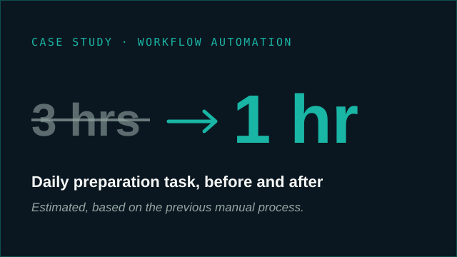

Three recurring daily tasks, sending physician schedules, notifying facilities and preparing doctor-visit flyers, were manual and error-prone. I built Excel, Outlook and Word macros to draft them, using only the tools already on the remote desktop. Daily task time went from about 3 hours to about 1, estimated based on the previous manual process. The workflow was presented and approved for operational use.